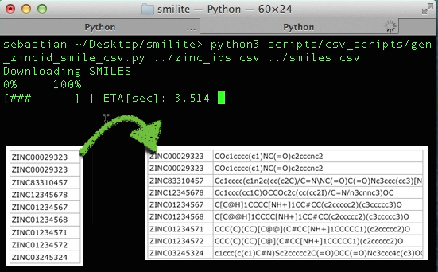
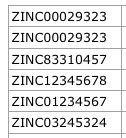
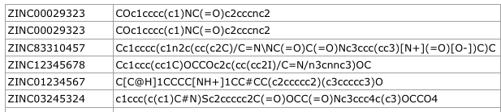
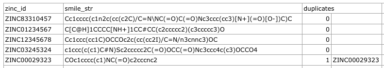
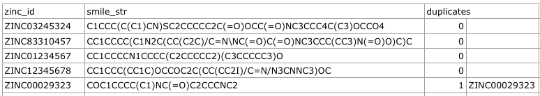
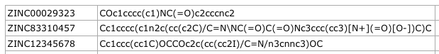
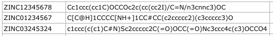
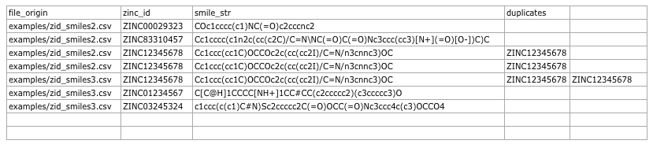
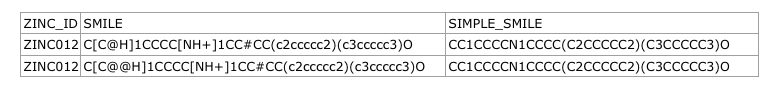
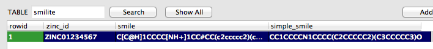

smilite - a Python module for downloading and analyzing SMILE strings
-- written by Sebastian Raschka on March 23, 2014
Tweetsmilite is a Python module I wrote in order to download and analyze SMILE strings (Simplified Molecular-Input Line-entry System) of chemical compounds from ZINC (a free database of commercially-available compounds for virtual screening, http://zinc.docking.org).

Sections
• Installation
• CSV file command line scripts
- gen_zincid_smile_csv.py (downloading SMILES)
- comp_smile_strings.py (checking for duplicates within 1 file)
- comp_2_smile_files.py (checking for duplicates across 2 files)
• SQLite file command line scripts
- lookup_single_id.py
- lookup_smile.py
- add_to_sqlite.py
- sqlite_to_csv.py
• Documentation
- General functions
- CSV file functions
- SQLite functions
If you would like to contribute to this project, the complete source code is available at GitHub: https://github.com/rasbt/smilite
Installation
You can use the following command to install smilite:
pip install smilite
or
easy_install smilite
Alternatively, you download the package manually from the Python Package Index https://pypi.python.org/pypi/smilite, unzip it, navigate into the package, and use the command:
python3 setup.py install
CSV file command line scripts
If you downloaded the smilite package from https://pypi.python.org/pypi/smilite or https://github.com/rasbt/smilite, you can use the command line scripts I provide in the scripts/csv_scripts dir.
gen_zincid_smile_csv.py (downloading SMILES)
Generates a ZINC_ID,SMILE_STR csv file from a input file of ZINC IDs. The input file should consist of 1 columns with 1 ZINC ID per row.
Usage:
python3 gen_zincid_smile_csv.py in.csv out.csv
Example:
python3 gen_zincid_smile_csv.py ../examples/zinc_ids.csv ../examples/zid_smiles.csv
Screen Output:
Downloading SMILES 0% 100% [########## ] | ETA[sec]: 106.525
Input example file format:

zinc_ids.csv
Output example file format:

zid_smiles.csv
comp_smile_strings.py (checking for duplicates within 1 file)
Compares SMILE strings within a 2 column CSV file (ZINC_ID,SMILE_string) to identify duplicates. Generates a new CSV file with ZINC IDs of identified duplicates listed in a 3rd-nth column(s).
Usage:
python3 comp_smile_strings.py in.csv out.csv [simplify]
Example 1:
python3 gen_zincid_smile_csv.py ../examples/zinc_ids.csv ../examples/zid_smiles.csv
Input example file format:
zid_smiles.csv
Output example file format 1:

comp_smiles.csv
Where
- 1st column: ZINC ID
- 2nd column: SMILE string
- 3rd column: number of duplicates
- 4th-nth column: ZINC IDs of duplicates
Example 2:
python3 comp_smile_strings.py ../examples/zid_smiles.csv ../examples/comp_simple_smiles.csv simplify
Output example file format 2:

comp_simple_smiles.csv
comp_2_smile_files.py (checking for duplicates across 2 files)
Compares SMILE strings between 2 input CSV files, where each file consists of rows with 2 columns ZINC_ID,SMILE_string to identify duplicate SMILE string across both files.
Generates a new CSV file with ZINC IDs of identified duplicates listed in a 3rd-nth column(s).
Usage:
python3 comp_2_smile_files.py in1.csv in2.csv out.csv [simplify]
Example:
python3 comp_2_smile_files.py ../examples/zid_smiles2.csv ../examples/zid_smiles3.csv ../examples/comp_2_files.csv
Input example file 1:

zid_smiles2.csv
Input example file 2:

zid_smiles3.csv
Output example file format:

comp_2_files.csv
Where:
- 1st column: name of the origin file
- 2nd column: ZINC ID
- 3rd column: SMILE string
- 4th-nth column: ZINC IDs of duplicates
SQLite file command line scripts
If you downloaded the smilite package from https://pypi.python.org/pypi/smilite or https://github.com/rasbt/smilite, you can use the command line scripts I provide in the scripts/sqlite_scripts dir.
lookup_single_id.py
Retrieves the SMILE string and simplified SMILE string for a given ZINC ID
from a previously built smilite SQLite database or from the online ZINC database.
Usage:
python3 lookup_single_id.py ZINC_ID [sqlite_file]
Example1 (retrieve data from a smilite SQLite database):
python3 lookup_single_id.py ZINC01234567 ~/Desktop/smilite_db.sqlite
Example2 (retrieve data from the ZINC online database):
python3 lookup_single_id.py ZINC01234567
Output example:
ZINC01234567 C[C@H]1CCCC[NH+]1CC#CC(c2ccccc2)(c3ccccc3)O CC1CCCCN1CCCC(C2CCCCC2)(C3CCCCC3)O
Where
- 1st row: ZINC ID
- 2nd row: SMILE string
- 3rd row: simplified SMILE string
lookup_smile.py
Retrieves the ZINC ID(s) for a given SMILE sting or simplified SMILE string from a previously built smilite SQLite database.
Usage:
python3 lookup_smile.py sqlite_file SMILE_STRING [simplify]
Example1 (search for SMILE string):
python3 lookup_smile.py ~/Desktop/smilite.sqlite "C[C@H]1CCCC[NH+]1CC#CC(c2ccccc2)(c3ccccc3)O"
Example2 (search for simplified SMILE string):
python3 lookup_smile.py ~/Desktop/smilite.sqlite "CC1CCCCN1CCCC(C2CCCCC2)(C3CCCCC3)O" simple
Output example:
ZINC01234567 C[C@H]1CCCC[NH+]1CC#CC(c2ccccc2)(c3ccccc3)O CC1CCCCN1CCCC(C2CCCCC2)(C3CCCCC3)O
Where
- 1st row: ZINC ID
- 2nd row: SMILE string
- 3rd row: simplified SMILE string
add_to_sqlite.py
Reads ZINC IDs from a CSV file and looks up SMILE strings and simplified SMILE strings from the ZINC online database. Writes those SMILE strings to a smilite SQLite database. A new database will be created if it doesn't exist, yet.
Usage:
python3 add_to_sqlite.py sqlite_file csv_file
Example:
python3 add_to_sqlite.py ~/Desktop/smilite.sqlite ~/Desktop/zinc_ids.csv
Input CSV file example format:
ZINC01234567 ZINC01234568 ...
An example of the smilite SQLite database contents after successful insertion is shown in the image below.

sqlite_to_csv.py
Writes contents of an SQLite smilite database to a CSV file.
Usage:
python3 sqlite_to_csv.py sqlite_file csv_file
Example:
python3 sqlite_to_csv.py ~/Desktop/smilite.sqlite ~/Desktop/zinc_smiles.csv
Input CSV file example format:
ZINC_ID,SMILE,SIMPLE_SMILE ZINC01234568,C[C@@H]1CCCC[NH+]1CC#CC(c2ccccc2)(c3ccccc3)O,CC1CCCCN1CCCC(C2CCCCC2)(C3CCCCC3)O ZINC01234567,C[C@H]1CCCC[NH+]1CC#CC(c2ccccc2)(c3ccccc3)O,CC1CCCCN1CCCC(C2CCCCC2)(C3CCCCC3)O
An example of the CSV file contents opened in an spreadsheet program is shown in the image below.

Documentation
After you installed the smilite module, you can import it in Python via import smilite.
The current functions include:
General functions
def get_zinc_smile(zinc_id): """ Gets the corresponding SMILE string for a ZINC ID query from the ZINC online database. Requires an internet connection. Keyword arguments: zinc_id (str): A valid ZINC ID, e.g. 'ZINC00029323' Returns the SMILE string for the corresponding ZINC ID. E.g., 'COc1cccc(c1)NC(=O)c2cccnc2' """
def simplify_smile(smile_str): """ Simplifies a SMILE string by removing hydrogen atoms (H), chiral specifications ('@'), charges (+ / -), '#'-characters, and square brackets ('[', ']'). Keyword Arguments: smile_str (str): A smile string, e.g., C[C@H](CCC(=O)NCCS(=O)(=O)[O-]) Returns a simplified SMILE string, e.g., CC(CCC(=O)NCCS(=O)(=O)O) """
CSV file functions
def generate_zincid_smile_csv(zincid_list, out_file, print_progress_bar=False): """ Generates a CSV file of ZINC_ID,SMILE_string entries by querying the ZINC online database. Keyword arguments: zincid_list (str): Path to a UTF-8 or ASCII formatted file that contains 1 ZINC_ID per row. E.g., ZINC0000123456 ZINC0000234567 [...] out_file (str): Path to a new output CSV file that will be written. print_prgress_bar (bool): Prints a progress bar to the screen if True. """
def check_duplicate_smiles(zincid_list, out_file, compare_simplified_smiles=False): """ Scans a ZINC_ID,SMILE_string CSV file for duplicate SMILE strings. Keyword arguments: zincid_list (str): Path to a UTF-8 or ASCII formatted file that contains 1 ZINC_ID + 1 SMILE String per row. E.g., ZINC12345678,Cc1ccc(cc1C)OCCOc2c(cc(cc2I)/C=N/n3cnnc3)OC ZINC01234567,C[C@H]1CCCC[NH+]1CC#CC(c2ccccc2)(c3ccccc3)O [...] out_file (str): Path to a new output CSV file that will be written. compare_simplified_smiles (bool): If true, SMILE strings will be simplified for the comparison. """
def comp_two_csvfiles(zincid_list1, zincid_list2, out_file, compare_simplified_smiles=False): """ Compares SMILE strings across two ZINC_ID CSV files for duplicates (does not check for duplicates within each file). Keyword arguments: zincid_list1 (str): Path to a UTF-8 or ASCII formatted file that contains 1 ZINC_ID + 1 SMILE String per row. E.g., ZINC12345678,Cc1ccc(cc1C)OCCOc2c(cc(cc2I)/C=N/n3cnnc3)OC ZINC01234567,C[C@H]1CCCC[NH+]1CC#CC(c2ccccc2)(c3ccccc3)O [...] zincid_list2 (str): Second ZINC_ID list file, similarly out_file (str): Path to a new output CSV file that will be written. compare_simplified_smiles (bool): If true, SMILE strings will be simplified for the comparison. """
SQLite functions
def create_sqlite(sqlite_file): """ Creates a new SQLite database file if it doesn't exist yet. The database created will consists of 3 columns: 1) 'zinc_id' (ZINC ID as Primary Key) 2) 'smile' (SMILE string obtained from the ZINC online db) 3) 'simple_smile' (simplified SMILE string, see smilite.simplify_smile()) Keyword arguments: sqlite_file (str): Path to the new SQLite database file. """
def insert_id_sqlite(sqlite_file, zinc_id): """ Inserts a new ZINC ID into an existing SQLite database if the ZINC ID isn't contained in the database, yet. Obtains the SMILE string from the ZINC online database and adds it to the new ZINC ID database entry together with an simplified SMILE string. Example database entry: zinc_id,smile,simple_smile "ZINC01234567","C[C@H]1CCCC[NH+]1CC#CC(c2ccccc2)(c3ccccc3)O","CC1CCCCN1CCCC(C2CCCCC2)(C3CCCCC3)O" Keyword arguments: sqlite_file (str): Path to an existing SQLite database file zinc_id (str): A valid ZINC ID """
An example database entry is shown in the image below.

def lookup_smile_sqlite(sqlite_file, smile_str, simple_smile=False): """ Looks up an ZINC ID for a given SMILE string in an existing SQLite database file. Keyword arguments: sqlite_file (str): Path to an existing SQLite database file smile_str (str): A SMILE string to query the database simple_smile (bool): Queries simplified smile strings in the database if true Returns a list with the ZINC ID, SMILE string, and simplified SMILE string or an empty list if SMILE string could not be found. Example returned list: ['ZINC01234567', 'C[C@H]1CCCC[NH+]1CC#CC(c2ccccc2)(c3ccccc3)O', 'CC1CCCCN1CCCC(C2CCCCC2)(C3CCCCC3)O'] If multiple ZINC IDs match the query SMILE string, a list of sublists is returned. """
def lookup_smile_sqlite(sqlite_file, smile_str, simple_smile=False): """ Looks up an ZINC ID for a given SMILE string in an existing SQLite database file. Keyword arguments: sqlite_file (str): Path to an existing SQLite database file smile_str (str): A SMILE string to query the database simple_smile (bool): Queries simplified smile strings in the database if true Returns a list with the ZINC ID, SMILE string, and simplified SMILE string or an empty list if SMILE string could not be found. Example returned list: ['ZINC01234567', 'C[C@H]1CCCC[NH+]1CC#CC(c2ccccc2)(c3ccccc3)O', 'CC1CCCCN1CCCC(C2CCCCC2)(C3CCCCC3)O'] """
def sqlite_to_dict(sqlite_file): """ Returns contents of an SQLite smilite database as Python dictionary object. Keyword arguments: sqlite_file (str): Path to an existing SQLite database file Returns an SQLite smilite database as Python dictionary object with ZINC IDs as keys and corresponding [SMILE_string, Simple_SMILE_string] lists as values. Example returned dictionary: { 'ZINC01234568': ['C[C@@H]1CCCC[NH+]1CC#CC(c2ccccc2)(c3ccccc3)O', 'CC1CCCCN1CCCC(C2CCCCC2)(C3CCCCC3)O'], 'ZINC01234567': ['C[C@H]1CCCC[NH+]1CC#CC(c2ccccc2)(c3ccccc3)O', 'CC1CCCCN1CCCC(C2CCCCC2)(C3CCCCC3)O'] } """
def sqlite_to_csv(sqlite_file, csv_file): """ Writes contents of an SQLite smilite database to a CSV file. Keyword arguments: sqlite_file (str): Path to an existing SQLite database file csv_file (str): Path to the output CSV file Example output CSV file contents: ZINC_ID,SMILE,SIMPLE_SMILE ZINC01234567,C[C@H]1CCCC[NH+]1CC#CC(c2ccccc2)(c3ccccc3)O,CC1CCCCN1CCCC(C2CCCCC2)(C3CCCCC3)O ZINC01234568,C[C@@H]1CCCC[NH+]1CC#CC(c2ccccc2)(c3ccccc3)O,CC1CCCCN1CCCC(C2CCCCC2)(C3CCCCC3)O ... """
An example output CSV file from an SQLite smilite database is shown in the image below.

If you have any suggestions or questions, please don't hesitate to write me an email or leave a comment in the comment section below! I am looking forward to your opinions and ideas, and I hope I can improve and extend this little module in future.